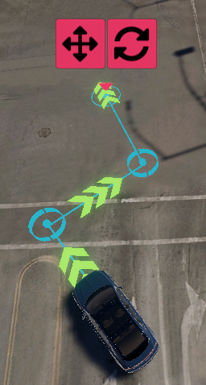
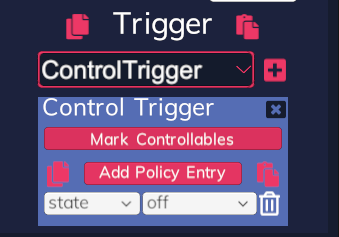

Visual Scenario Editor
Visual Scenario Editor (VSE) is a tool for visual creating and editing scenarios for the SVL Simulator. Each scenario represents a test case. VSE focuses on quick scenario creation using visual controls while supporting custom scriptable plugins to extend the tools panels.
Video: How to create and run VSE scenario top#
How To Run top#

Visual Scenario Editor is integrated into the SVL Simulator executable. To enter the VSE, the Simulator has to be logged in, linked to the cloud, and cannot be running any simulation. The Visual Editor button is available when the Simulator is properly connected to the cloud.
Creating A Scenario top#
VSE allows placing agents on the map, changing parameters of those agents, and setting waypoints for their movement. Each waypoint can affect the agent with different trigger effects like waiting for a fixed time at the waypoint.
Camera Management top#


{kind=link}
The animations above present in order: camera movement, zooming in and out, and camera rotation. VSE uses a drag and drop system to move around the map. Press the middle mouse button (scroll wheel) down somewhere on the map and move the mouse while holding the middle button down, release the button to stop moving the map. To zoom in and zoom out, use the mouse wheel scroll. If Free Camera mode is selected in options, the camera can be rotated with the drag and drop while holding the mouse right-click. Additionally, the camera can be moved with the keyboard "WSAD" keys.
Confirmation Popup top#

Operations like resetting scenarios with unsaved changes require additional confirmation. VSE shows a popup with the operation description that requires user confirmation before it is performed.
Log Popup top#

VSE displays important information on an additional log panel. This panel shows and hides automatically, it lasts longer the longer message is. If multiple messages occur, they are displayed one by one in the log panel before hiding it.
Inspector top#
Inspector allows selecting different panels for editing the Scenario. Inspector can be hidden and shown using the button attached to the inspector from the left side. Currently, there are the following panels available to select:

Filecontains basic controls for the VSE like saving, loading, resetting scenario, exiting VSE, and changing the VSE options.Addallows adding new elements to the map.Editallows editing selected map elements, for example selecting variant of an agent or editing waypoint parameters.Mapviews available maps in the library and allows changing map in VSE, changing map resets the scenario.Playbackimitates the scenario simulation, for example, the agents' movement along with the set waypoints.
Future updates will include a plugins system for adding custom inspector panels.
File Panel top#

The file panel in the VSE inspector allows:
Loada scenario from a previously saved JSON file; loading a scenario will first clear (reset) the current scenario and can load a different mapSavethe current scenario to a JSON fileReset Scenarioclears every added elementExit Editorcloses the VSE and returns to the main Simulator window
The options section in the file panel allows to adjust VSE usage:
Camera Mode- toggles current camera mode, switches betweenTop-down camera,Leaned 45° camera, andFree camera. OnlyFree cameraallows rotating the camera with the mouse.Snap- toggling this option enables or disables snapping agents to the map lanes.Invert X- toggling this option inverts the rotation direction while rotating the camera with a horizontal mouse movement in theFree cameramode.Invert Y- toggling this option inverts the rotation direction while rotating the camera with a vertical mouse movement in theFree cameramode.
Add Panel top#

Placing a new agent into the scenario requires dragging it from the agents' panel. Press the left mouse button on the agent type you want to add and drag it on the map; release the button to place the agent on the map. Different agent types can be added in the same way. If you want to cancel adding an agent, press the right mouse button while dragging an agent. If dragging finishes over the UI, it will cancel drag as well. By default, agents will be snapped to the map lanes; this option can be toggled in the File panel.

VSE lists all the ego vehicles added to the cloud library. Ego vehicles' names that require downloading contain two cloud icons, pressing their button for the first time invokes the downloading process. The start and stop of the download process are confirmed in the log panel.
VSE loads all the NPCs, pedestrians, and controllables that are configured for the Simulator.

Each scenario element source (Ego vehicles, NPCs, pedestrians, controllables) are available in the separate panels with all available variants. If there are many variants, the list is divided into multiple pages.

The description panel can be viewed for each scenario element when the pointer hovers over the button for a short time. Each element type displays different pieces of information.
Edit Panel top#

Parameters edit panel allows changing more data of the selected map element. After selecting an element, the parameters edit panel will fill with components possible to edit. For example, after selecting an NPC agent it is possible to select its variant, behaviour, color, and add waypoints for this agent. Selecting a waypoint allows you to set the speed and wait time for this waypoint.
Note that the available variants for EGO type will match the vehicles available in your SVL Simulator account's "My Library". Refer to the Vehicles section of My Library for more information on how to add vehicles to your library in the Web UI.
Editing Destination Point top#


While editing an ego agent a destination point can be activated for this agent. Toggle the destination point value in the edit panel while editing an ego agent to activate or deactivate the destination point. The camera will focus on the destination point after pressing the camera button.
Editing Behaviour top#

NPCs supports various behaviour scripts that will control the vehicle. VSE provides a dropdown with all available NPC behaviours, selected behaviour is saved in the scenario. Some behaviours can be parameterized, for example, NPCLaneFollowBehaviour got the isLaneChange toggle parameter and the maxSpeed value. Only NPCs with the NPCWaypointBehaviour supports editing the waypoints.
Editing Color top#


VSE includes the color picker panel that allows selecting any color from the RGB and HSV pallet. NPCs support selecting a custom color of the vehicle. To change the vehicle color click the current color button and select the new color in the opened color picker. The changed color will be applied immediately, but the undo record is registered after closing the color picker panel.
Editing Triggers top#

Editing a waypoint allows adding different trigger effectors to this point. All the effectors added to one waypoint are executed in parallel. Some effectors require additional settings and parameters. Each effector can use a custom edit panel.
Triggers can be copy and pasted. Use the copy icon (button on the left of the Trigger title) to copy the effectors, then use the paste icon (button on the right of the Trigger title) to clone the effectors to another waypoint.

To add a new trigger effector, select it from the dropdown list and click the add button on the right side. A new effector will be added and available for addition under the dropdown.
The simulator provides the following trigger effectors with the VSE:
- Time To Collision
This effector calculates if an NPC can cause a collision with any ego, calculating current direction, velocity, and acceleration. The NPC will wait to proceed to the next waypoint such that a collision with the ego vehicle would occur. If no possible collision is found NPC does not wait.
- Wait For Distance
Adding this effector makes NPC wait at the waypoint until any ego vehicle is closer than the max distance (in meters) set in this trigger effector. If no ego vehicle will get close enough, the NPC can wait infinitely.
- Wait Time
The agent will wait for the fixed time (in seconds) at the waypoint before continuing movement towards the next waypoint.
- Waiting Point

A waiting point makes the agent wait until any ego vehicle enters the activation zone. Activation zone can be moved like other scenario elements, by dragging the Move button. If it is required, the radius (in meters) of the activation zone can be changed in the Edit panel of the waypoint or by dragging the Resize button to the left (shrinking) or right (enlarging).
- Control Trigger

This trigger effector will apply the edited policy to all marked controllables when the trigger is invoked. Click the Mark Controllables button and then click on the controllables on the map to mark them with this effector, right-click to cancel the marking process. Only one type of controllable can be marked by a Control Trigger, but multiple Control Triggers are allowed. See the Editing Controllables section to learn more about editing policies.

Editing Controllables#

After selecting controllables in the VSE, the editing panel allows changing their default policy. A policy is a list of control actions that will be applied when the controllable is initialized, each policy entry represents a single control action. VSE fills the action dropdown with all the allowed actions for the edited controllable. The value can be edited either by an input field, the decimal input field for wait and trigger actions, dropdown for state actions, and no value edition for the loop action. Each policy entry can be removed with the button on the right of the policy row.
A whole policy can be copied and pasted between controllables of the same type. The copy button (on the left from the Add Policy Entry button) copies the policy to the clipboard so it can be pasted to another controllable of the same type (button on the right from the Add Policy Entry button).
Map Panel top#
Map panel views every map available in your SVL Simulator account's "My Library" and allows switching the current map in the VSE. Changing the map always resets the scenario.
Refer to the Maps section of My Library for more information on how to add maps to your library in the Web UI.
Quick Edit Panel top#

Selecting a map element (for example agent) with the left mouse button shows the quick edit panel above the selected element.
Removedeletes the selected element from the scenario.Moveallows to reposition a selected element with a drag and drop system. Use the right mouse button to cancel the reposition.Rotateallows rotating selected elements with drag and drop system, drag button to the left or right to rotate the selected object. Use the right mouse button to revert the rotation.Resizeallows scaling selected elements with drag and drop system, drag button to the left (shrinking), or to the right (enlarging). Use the right mouse button to revert the resizing.
Future updates will include a plugins system for custom quick edit buttons.
Playback Panel top#

The playback panel imitates some of the simulation behaviours to visualize the final scenario effect. Currently, only agents with waypoints imitate their movement. Playback can be controlled with the following controls:
Playstarts the playback.Pausefreezes the playback at the current time.Stopstops the playback and resets time to the beginning.Timelineallows flexible time adjustment of the playback.Playback speedchanges the time scale of the playback (available playback speeds: 1/4x, 1/2x, 1x, 2x, 4x).
File Selector top#

The file selector is a simple built-in UI dialog for selecting the destination file on the hard-drive. It allows to change manually the directory path, go one directory up, enter internal directories and select a file with a required extension. When saving a scenario, it can override an existing file, or it can be saved to a new file with a selected name.
Undo top#
VSE includes an undo feature that allows reverting the last changes. Use the "ctrl"+"z" on your keyboard to revert the most recent operation. Undo manager registers multiple records on the stack, using undo applies the last operation record, and removes it from the stack. This way, the undo can be used multiple times to revert many most recent actions.
Scenario Example top#

The Visual scenario editor runtime template Simulation can run a created Scenario in the VSE.